방빙·제우 계통
항공기 방빙·제우 계통을 다룹니다. 결빙 위험·방빙/제빙 구분, 결빙 탐지, 열/전기/화학 방빙, 위핑윙, 공압 제빙 부츠·정비, 프로펠러 전기열 제빙, 지상 제빙(FPD·홀드오버)까지.
Covers aircraft ice and rain control: icing hazards and anti/de-ice, ice detection, thermal/electric/chemical anti-icing, weeping wing, pneumatic boots and maintenance, propeller electrothermal de-icing, and ground de-icing (FPD/holdover).
결빙(Ice)은 양력·조종면의 매끄러운 기류를 파괴해 비행 위험을 만듭니다. 날개 결빙은 양력↓, 무게↑, 유도항력↑을 일으킵니다.Ice destroys smooth airflow over lifting and control surfaces, creating a flight hazard; wing ice reduces lift, adds weight, and increases induced drag.
1) 방빙(Anti-Icing) — 얼음 형성을 예방.1) Anti-icing — prevents ice formation.
2) 제빙(De-Icing) — 형성된 얼음을 제거.2) De-icing — removes accumulated ice.
3) 인증 — FAR 23.1419 요건을 충족한 항공기만 알려진 결빙 조건(Known Icing)에 진입 가능. 많은 경항공기는 우발적 결빙 대응 장비만 있어 예보된 결빙 진입 불가.3) Certification — only aircraft meeting FAR 23.1419 may enter known icing; many light aircraft have only inadvertent-encounter equipment and can't enter forecast icing.
결빙 종류: 서리(Frost), 날개 앞전 얼음, 수평안정판 얼음, 기화기 얼음, 프로펠러 얼음, 엔진 흡입구·윈드실드 얼음.Icing types: frost, wing leading-edge ice, horizontal stabilizer ice, carburetor ice, propeller ice, engine intake and windshield ice.
서리(Frost)는 무게는 미미하나 강력한 공기역학적 스포일러 — 경계층을 두껍게 해 항력을 크게 늘리므로 반드시 비행 전 제거해야 합니다.Frost adds little weight but is a strong aerodynamic spoiler, thickening the boundary layer and adding drag, so it must be removed before flight.
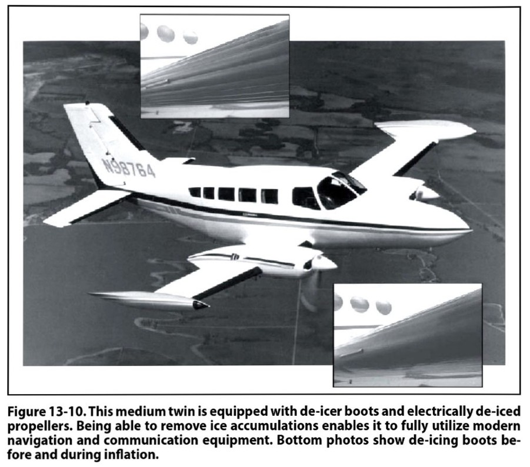
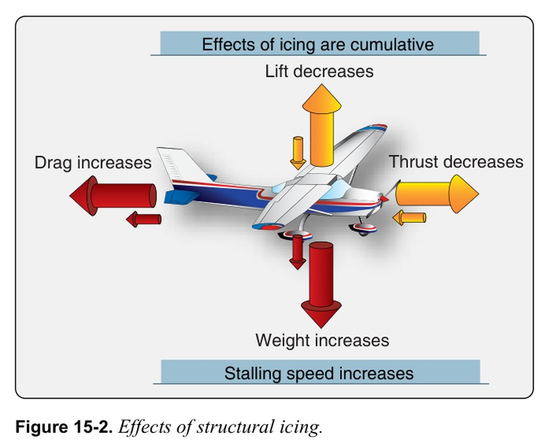
- A. 제빙 / 방빙De-ice / anti-ice
- B. 방빙(Anti-Ice) / 제빙(De-Ice)Anti-ice / de-ice
- C. 가열 / 냉각Heat / cool
- D. 코팅 / 세척Coat / clean
- A. 기화기 열풍Carb hot air
- B. 압축기 블리드 에어(Bleed Air)Compressor bleed air
- C. 배기가스Exhaust gas
- D. 램 에어Ram air
- A. 제빙 부츠De-icer boot
- B. 위핑윙(Weeping Wing/TKS)Weeping wing (TKS)
- C. 블리드 에어Bleed air
- D. 전기열Electrothermal
- A. 색상Color
- B. 홀드오버 타임(Type II/IV가 김)Holdover time (II/IV longer)
- C. 가격만Price only
- D. 독성Toxicity
- A. 효과가 두 배라서Doubles the effect
- B. 번져서 시야를 방해하고 제거가 어려움It smears, obstructs vision, and is hard to remove
- C. 유리가 깨져서Breaks the glass
- D. 와이퍼가 고장나서Fails the wiper
- A. 결빙이 이미 축적된 후After ice has accumulated
- B. 결빙 조건에 처음 진입하거나 예상될 때Whenever icing conditions are first encountered or expected to occur
- C. 착륙 직전에만Only just before landing
- A. 압력계 변동, 진공계는 비교적 일정Fluctuating pressure gauge and relatively steady vacuum gauge readings
- B. 압력계 일정, 진공계 변동Steady pressure and fluctuating vacuum
- C. 둘 다 일정Both steady
- A. 조종석 서모스탯Thermostats in the cockpit
- B. 서모사이클링 스위치Thermo-cycling switches
- C. 연료 차단 밸브 수동 조작Manual fuel shutoff valves
- A. 부츠 팽창을 좌우 대칭으로 순차 제어To sequence the deicer boot inflations symmetrically
- B. 공기 압력을 높이기 위해To increase air pressure
- C. 오일을 분리하기 위해To separate oil from the air
- A. 압축기 블리드 공기와 항공기 전기 계통compressor bleed air and the aircraft electrical system
- B. 배기가스와 유압 계통exhaust gas and the hydraulic system
- C. 램 에어와 연료 히터ram air and fuel heaters
방빙·제빙 계통은 필요할 때만 작동시켜 비용·마모를 줄입니다. 탐지 방식이 이를 돕습니다.Anti/de-ice systems run only when needed to reduce cost and wear; detection helps.
1) 육안(Visual) — 조종사가 날개 앞전·윈드실드를 관찰. 야간엔 조명 필요(FAR 23 요구). 승무원이 볼 수 없는 부위는 전자 탐지기 필요.1) Visual — the crew watches the wing leading edge/windshield; lights are needed at night (FAR 23); electronic detectors cover unseen areas.
2) 전자(Electronic) — 진동 프로브가 기류에 노출. 얼음이 붙으면 진동 주파수가 감소, 마이크로프로세서가 설정값에 도달하면 ICE 경고등 점등. 프로브 내 히터가 녹인 뒤 재점검.2) Electronic — a vibrating probe in the slipstream; ice lowers its frequency, and a microprocessor lights ICE at a set value; an internal heater melts it and rechecks.
3) 광학(Optical) — 날개 얼음 두께를 측정(15mm 범위, 15um 분해능). 돌출 없이 외피에 매립돼 초음속기에도 적합.3) Optical — measures wing ice thickness (15 mm range, 15 um resolution); flush-mounted, suitable even for supersonic flight.
4) C/FIMS — 외피 매립 센서가 오염물의 전자기 특성을 감지해 얼음·서리·눈 축적, 제빙액 효과, 외피 온도까지 측정.4) C/FIMS — flush skin sensors detect contaminants' electromagnetic properties, measuring ice/frost/snow, de-ice fluid effectiveness, and skin temperature.
탐지로 방빙·제빙을 필요할 때만 작동시켜 효율을 높입니다.Detection runs anti/de-ice only when needed for efficiency.
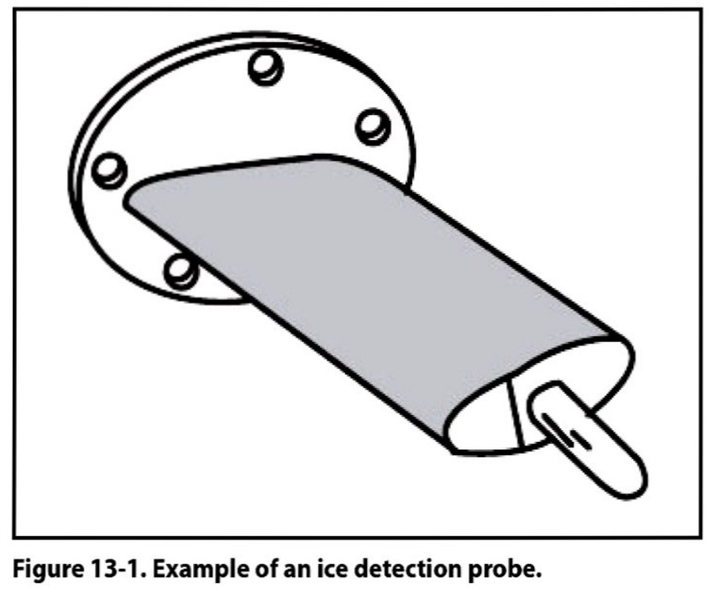
- A. FAR 91.411FAR 91.411
- B. FAR 23.1419FAR 23.1419
- C. FAR 43FAR 43
- D. FAR 25.981FAR 25.981
가열 공기를 날개·꼬리 앞전 히터 덕트로 보내 얼음 형성을 예방합니다.Heated air is routed to wing/tail leading-edge ducts to prevent ice.
1) 왕복엔진기 — 연소식 히터 또는 엔진 배기 주변 히터 슈라우드로 공기를 가열. 기화기 결빙 조건 시 기화기에도 열풍 공급. 연소식 히터는 열 사이클링 스위치로 제어.1) Reciprocating — a combustion heater or exhaust heater shroud warms air; hot air also goes to the carburetor in icing conditions; combustion heaters use thermo-cycling switches.
2) 터빈기(대부분) — 엔진 압축기 블리드 에어(Bleed Air)를 앞전으로 보내 방빙. 찬 공기를 섞어 온도 조절. B727은 외측 두 엔진에서 블리드해 앞전 슬랫·플랩 가열.2) Turbine (most) — engine compressor bleed air heats the leading edges; cold air is mixed to control temperature; the B727 bleeds from the two outboard engines to heat slats/flaps.
3) 과열 보호 — 오버히트 센서 스위치가 덕트 파손 등으로 과열되면 경고등 점등·방빙 밸브 폐쇄. 온도 정상 복귀 시 재개.3) Overheat protection — overheat sensors light a warning and close anti-ice valves on a duct break; flow resumes when temperature normalizes.
4) 엔진 흡입구 — 얼음 덩어리가 떨어져 압축기로 흡입되면 손상되므로, 블리드 에어로 흡입구 앞전·가이드 베인·불릿 노즈를 가열.4) Engine intakes — ice chunks breaking into the compressor cause damage, so bleed air heats the intake leading edge, guide vanes, and bullet nose.
B727은 후방 상부 중앙엔진 흡입구 보호를 위해 상부 VHF 안테나에도 열풍을 보내 얼음 흡입을 막습니다.The B727 also heats the upper VHF antenna to keep ice from breaking off into the rear center-engine intake.
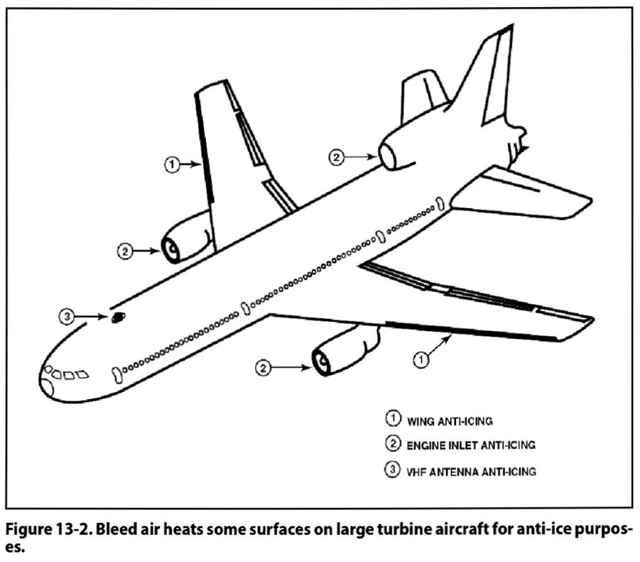
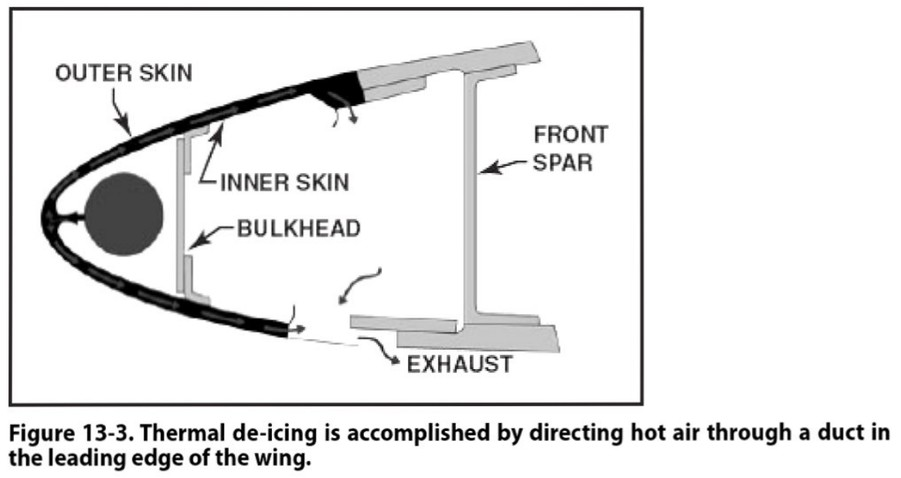
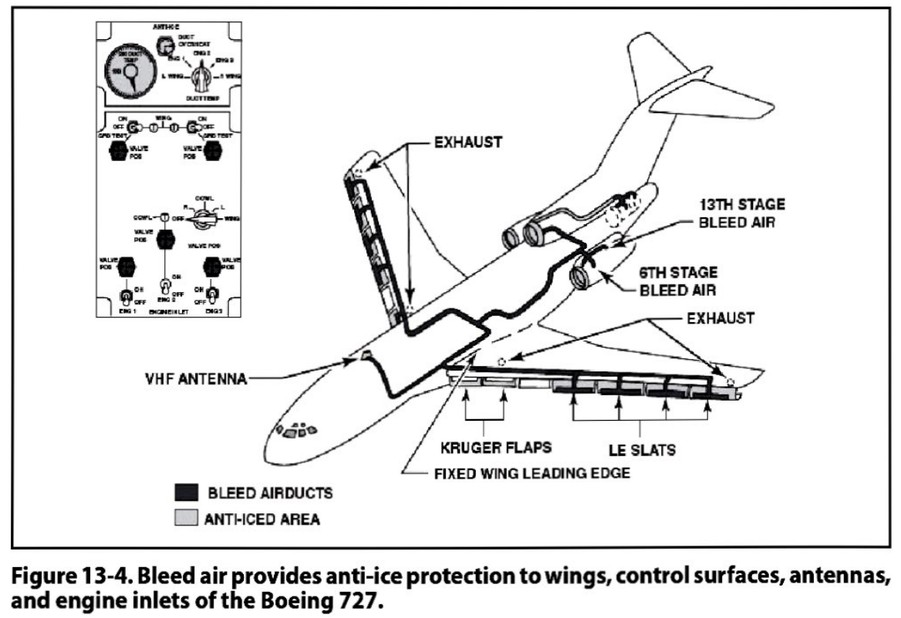
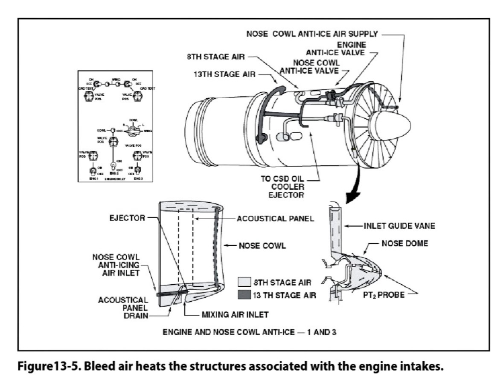
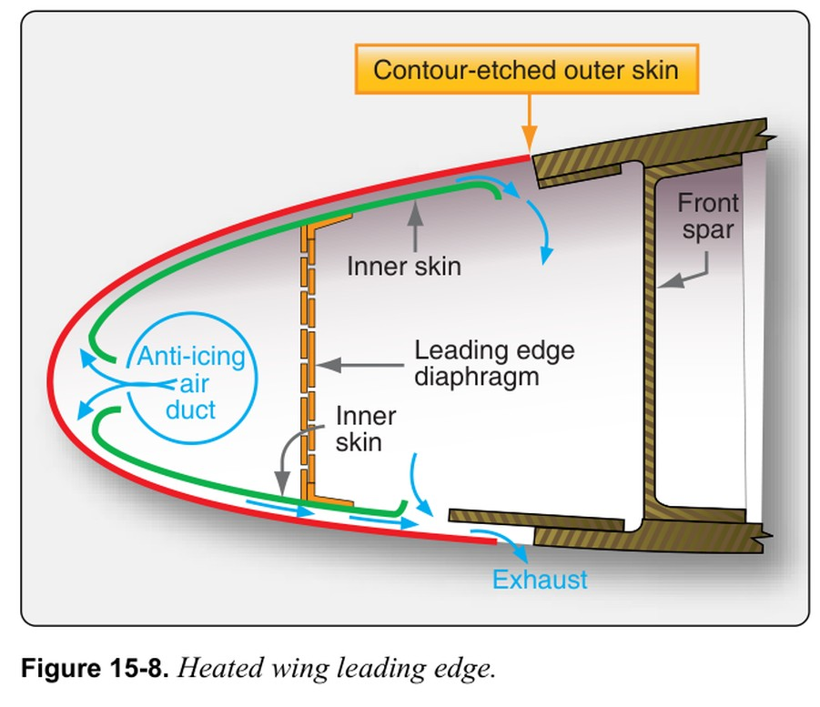
전기 히터로 특정 부위의 얼음을 방지합니다.Electric heaters prevent ice on specific parts.
1) 피토관(Pitot) — 전기 히터로 결빙 방지. 매우 강력해 지상에서 장시간 작동 금지(기류 없이 과열·소손). 비행 중 지시등·전류계로 작동 감시.1) Pitot — electrically heated; very powerful, so don't run long on the ground (overheats without airflow); monitor in flight by lights/ammeter.
2) 정압구·실속경고 베인 — 전기 가열. 정압구가 가열 안 되면 대체 정압원(Alternate Static) 밸브 필요.2) Static ports/stall vanes — electrically heated; if the static port isn't heated, an alternate static source valve is needed.
3) 배수관·급수관 — 대형기 화장실 등 동결 방지 전기 가열.3) Drains/water lines — electric heat prevents freezing in large-aircraft lavatories.
4) 윈드실드 — 두 방식: 미세 저항선 매립, 또는 외측 유리 안쪽 전도성 코팅. 전류로 가열. 문제: 박리(Delamination)·변색·긁힘·아크(Arcing). 아크는 전도성 코팅 파손 신호 — 국부 과열·손상 유발.4) Windshield — two methods: embedded resistance wires, or a conductive coating inside the outer glass; heated by current; problems: delamination, discoloration, scratches, arcing (arcing signals coating breakdown, causing local overheat/damage).
고속 제트기 윈드실드는 여압·비행하중·4파운드 조류 충돌(순항속도)을 견뎌야 함. 가열 시 비닐층이 덜 부서져 조류 충돌 저항이 강해집니다.High-speed jet windshields must withstand pressurization, flight loads, and a 4-lb bird strike at cruise speed; heating makes the vinyl less brittle, improving bird-strike resistance.
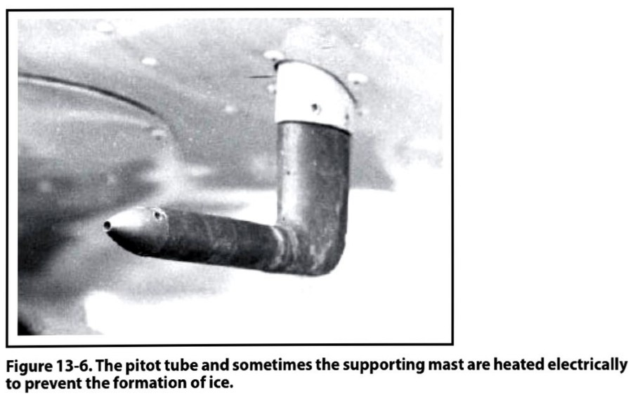
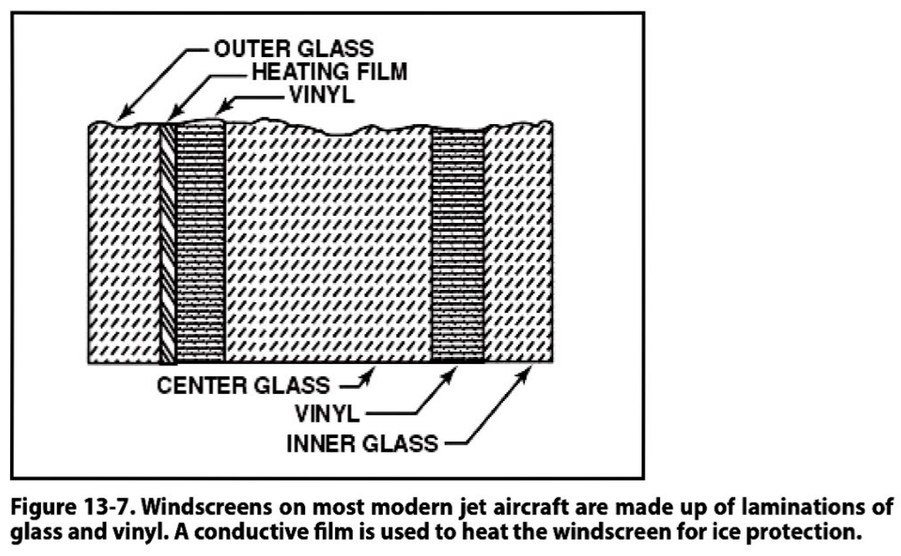
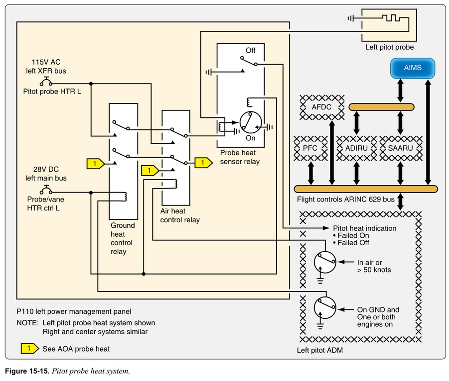
- A. 전기 낭비Wastes power
- B. 기류 없이 과열·소손Overheats without airflow
- C. 소음Noise
- D. 진동Vibration
- A. 정상 작동Normal operation
- B. 전도성 코팅 파손Conductive coating breakdown
- C. 과냉각Overcooling
- D. 습기 부족Low humidity
화학 방빙은 물의 어는점을 낮추고 표면을 미끄럽게 해 얼음이 붙지 못하게 합니다. 이소프로필/메틸 알코올 또는 에틸렌글리콜+알코올 사용.Chemical anti-ice lowers water's freeze point and makes the surface too slick for ice; uses isopropyl/methyl alcohol or ethylene glycol + alcohol.
1) 프로펠러 방빙 — 이소프로필 알코올을 블레이드 앞전에 분사. 탱크에서 펌프(레오스탯 제어 전동모터)로 공급. 슬링거 링(Slinger Ring)이 원심력으로 블레이드 노즐에 분배. 탱크 용량이 작동 시간 제한.1) Propeller — isopropyl alcohol sprayed on blade leading edges; pumped from a tank (rheostat-controlled motor); a slinger ring distributes it to blade nozzles by centrifugal force; tank capacity limits run time.
2) 윈드실드 방빙 — 조종사 윈드실드 앞 스프레이 바로 화학액 분사.2) Windshield — chemical sprayed from a spray bar ahead of the pilot's windshield.
3) 레이돔 방빙 — 화학액으로 얼음에 의한 부정확 판독 방지.3) Radome — chemical prevents inaccurate readings from ice.
4) 위핑윙(Weeping Wing, TKS) — 날개·꼬리 앞전 다공성 패널(메시)에서 글리콜액이 스며 나와 표면을 코팅. 방빙+제빙 겸용 — 얼음이 쌓이면 부동액이 얼음-기체 결합을 화학적으로 끊어 기류가 날려버림. 런백 결빙(녹은 물이 뒤로 흘러 재결빙) 감소 효과. 단, 액이 떨어지면 방빙 불가.4) Weeping wing (TKS) — glycol weeps from porous leading-edge panels to coat surfaces; both anti-ice and de-ice — antifreeze chemically breaks the ice-airframe bond so airflow removes it; reduces runback icing; but no protection once fluid runs out.
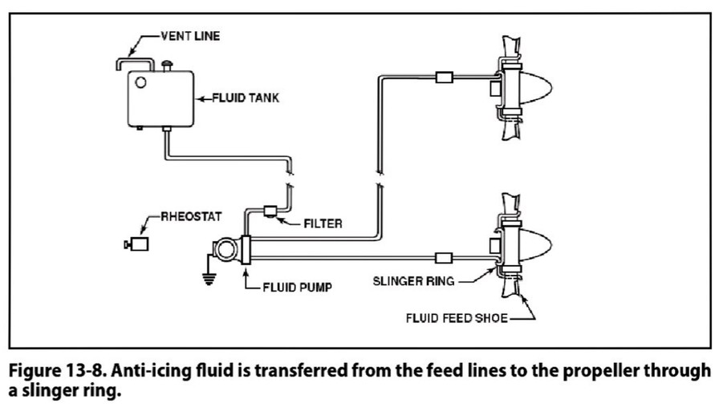
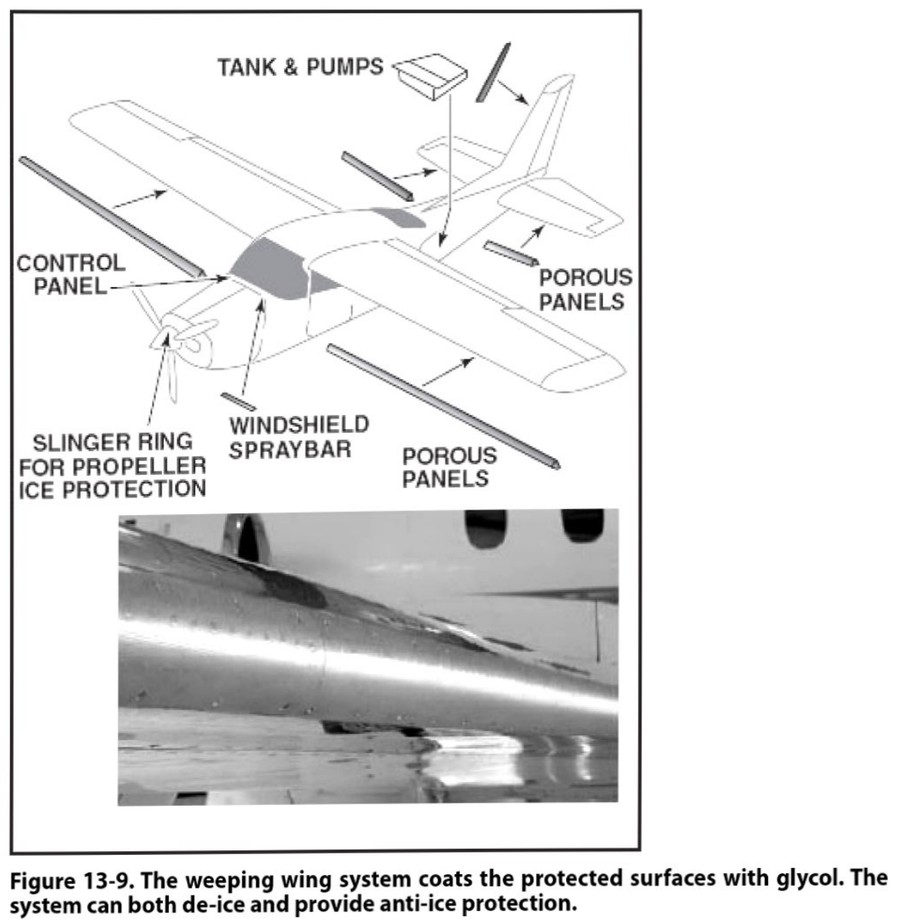
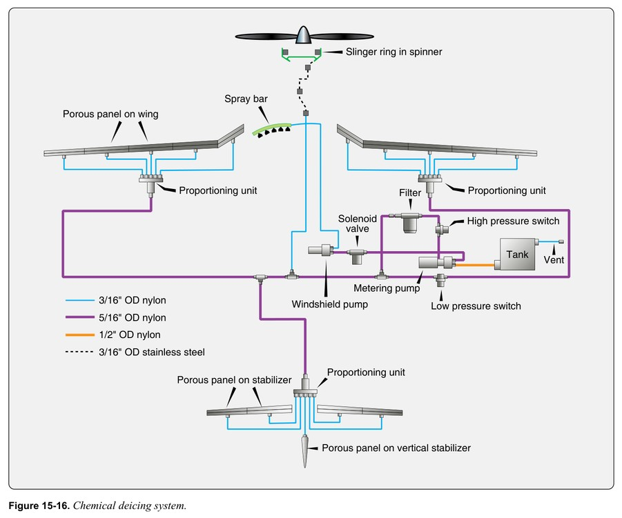
- A. 스프레이 바Spray bar
- B. 슬링거 링(Slinger Ring)Slinger ring
- C. 레오스탯Rheostat
- D. 다공성 패널Porous panel
제빙(De-Icing)은 형성된 얼음을 제거하며, 날개·꼬리 앞전의 공압 제빙 부츠가 대표적입니다. 저속기에서는 얼음을 형성시킨 뒤 깨뜨리는 것이 효과적입니다(런백 방지).De-icing removes formed ice; pneumatic boots on wing/tail leading edges are typical; on slow aircraft it's effective to let ice form then crack it (avoids runback).
1) 작동 원리 — 앞전에 부착된 여러 튜브에 저압 공기를 타이머 분배밸브로 주입. 순차식은 중앙 튜브가 먼저 팽창해 얼음을 깨고, 수축 후 외측 튜브가 팽창해 깨진 얼음을 밀어올려 기류가 날려버림. 이후 전 튜브 수축, 흡입(Vacuum)으로 부츠를 표면에 밀착 후 얼음 재형성까지 대기.1) Operation — a timer distributor valve feeds low-pressure air to tubes on the leading edge; sequentially, the center tube inflates first to crack ice, deflates, then outer tubes inflate to push cracked ice up for airflow to remove; all deflate and vacuum holds the boot tight until ice reforms.
2) 작동 공기원 — ①터빈 블리드 에어(스텝다운 레귤레이터로 감압), ②엔진구동 공기펌프(계기 진공펌프) 배기(웨트 펌프는 오일분리기 필요), ③드라이 펌프(오일분리기 불필요), ④전용 압축공기 실린더.2) Air sources — turbine bleed air (stepped down by a regulator), engine-driven pump exhaust (wet pump needs an oil separator), dry pump (no separator), or a dedicated compressed-air cylinder.
3) 구성품 — 공기펌프, 진공 레귤레이터, 압력조절밸브, 타이머 모듈, 제빙 부츠. 정상 시 압력계는 팽창에 따라 변동, 진공계는 비교적 일정.3) Components — air pump, vacuum regulator, pressure control valve, timer module, de-icer boots; normally the pressure gauge fluctuates with inflation while the vacuum gauge stays steady.
대형기는 전동 타이머가 솔레노이드 밸브를 순차 제어, 소형기는 조종사가 얼음 축적 관찰 후 스위치로 1~3 사이클 작동.Large aircraft use an electric timer sequencing solenoid valves; small aircraft cycle 1-3 times by pilot switch after observing ice.
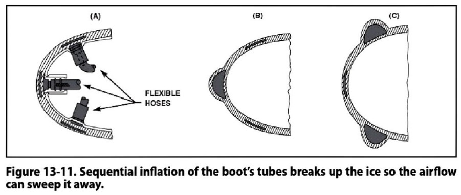
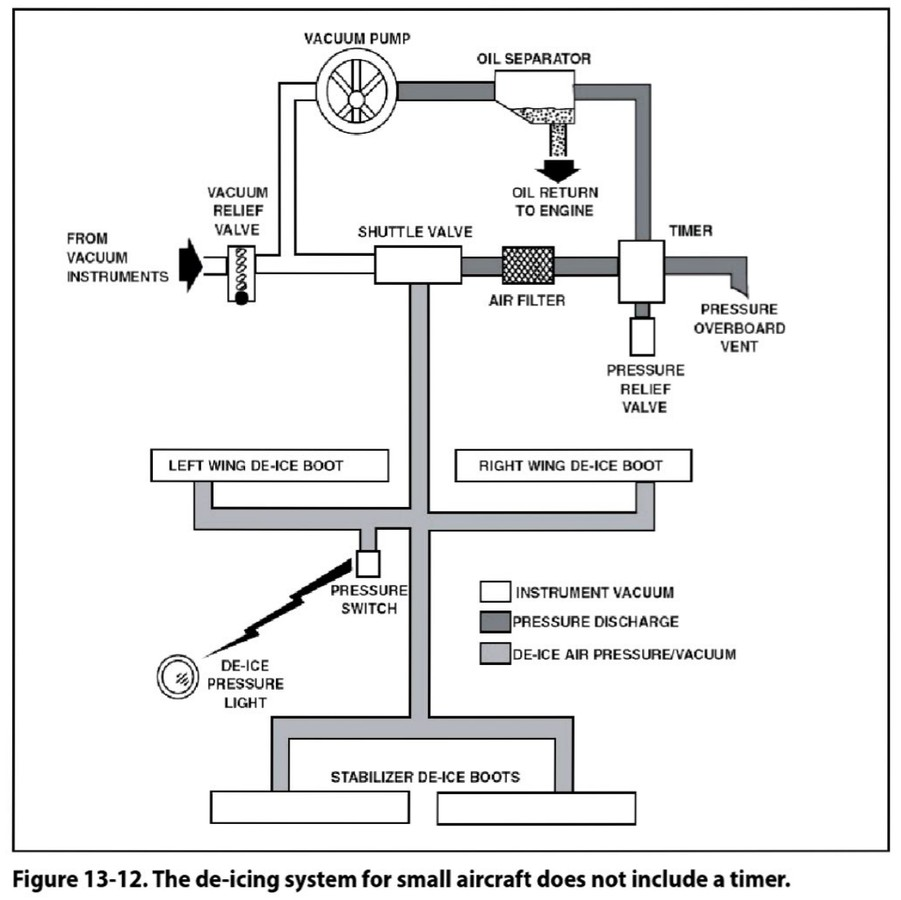
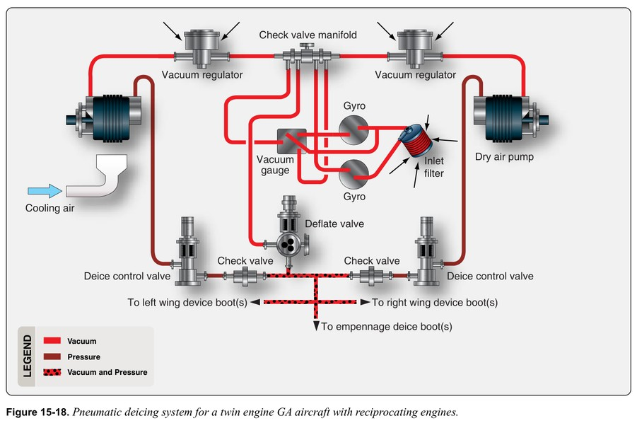
- A. 압력(Pressure)Pressure
- B. 흡입/진공(Vacuum)Vacuum
- C. 스프링Spring
- D. 접착제Adhesive
- A. 도색Painting
- B. 청결 유지(순한 비누+물 세척)Keeping clean (mild soap and water)
- C. 공기압 증가More air pressure
- D. 냉각Cooling
- A. 펌프를 윤활하기 위해To lubricate the pump
- B. 제빙부츠를 오일 열화로부터 보호To protect the deicer boots from oil deterioration
- C. 공기를 냉각하기 위해To cool the air
제빙 부츠 정비의 핵심은 청결 유지입니다.The key to boot maintenance is keeping them clean.
1) 세척 — 순한 비누+물로 세척하는 것이 가장 중요. 항공기 세정 화합물을 깨끗한 물로 제거. 기름·그리스는 벤졸/무연 가솔린에 적신 헝겊으로 가볍게 문지르고 용제가 고무에 스미기 전 닦아냄. 실리콘 스프레이로 표면을 매끄럽게 해 얼음 부착 방지.1) Cleaning — wash with mild soap and water (most important); remove aircraft cleaning compounds with clean water; remove oil/grease by lightly rubbing with a benzol/lead-free-gasoline rag and wiping before it soaks in; silicone spray smooths the surface against ice.
2) 부착 방식 — 구형은 리브넛(Rivnut)에 나사로 고정(가장자리 금속 페어링 스트립으로 식별). 신형은 접착제로 부착.2) Attachment — older boots screwed into Rivnuts (identified by an edge metal fairing strip); newer boots bonded with adhesive.
3) 탈거 — 지정 용제로 접착제 연화 후 가장자리부터 조심스럽게 박리(용제로 계속 적심).3) Removal — soften adhesive with the specified solvent and peel carefully from the edges (keep it wet).
4) 장착 — 도료·프라이머 완전 제거, 표면·부츠 뒷면 세척, 접착제 도포, 롤러로 밀착. 테스트 스트립(Test Strip) — 부츠 재료 조각을 동일 절차로 부착 후 경화, 박리력을 측정해 규정 공차 내인지 확인(적절한 접착 확인법).4) Installation — remove all paint/primer, clean surface and boot back, apply adhesive, roll tight; a test strip (scrap applied by identical procedure, cured, peel-force measured) confirms proper bonding within tolerance.
5) 수리 — 콜드 패치(Cold Patch): 스커프 손상(가장 흔함)·튜브부·필렛 찢김 보수. 반드시 제작사 매뉴얼 준수.5) Repair — cold patch: scuff damage (most common), tube-area damage, fillet tears; always follow the manufacturer's manual.
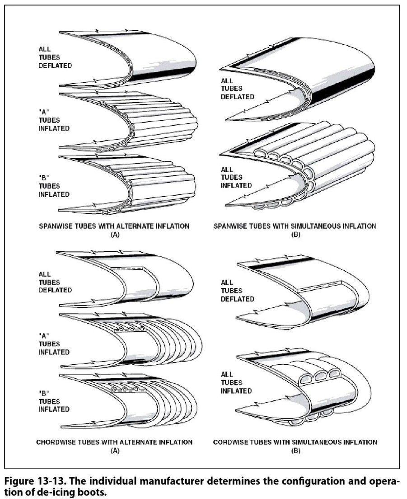
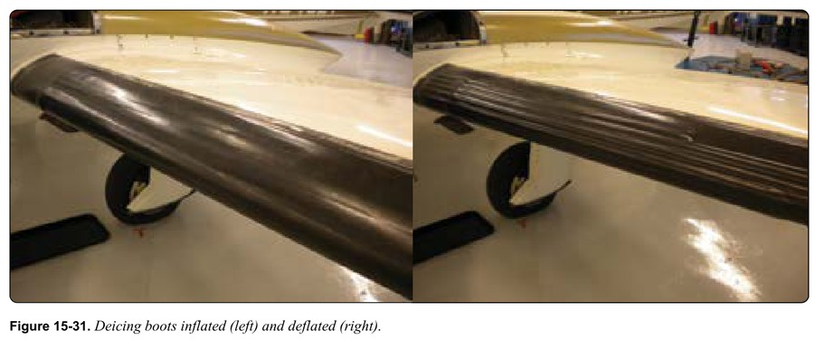
많은 프로펠러가 전기열(Electrothermal) 제빙 부츠로 제빙됩니다.Many propellers are de-iced by electrothermal boots.
1) 원리 — 히터선을 매립한 고무 부츠를 블레이드 앞전에 접착. 전류로 고무를 가열해 얼음을 녹이고, 원심력과 바람이 얼음을 날려버림.1) Principle — rubber boots with embedded heater wires bonded to blade leading edges; current heats the rubber to melt ice, and centrifugal force plus wind remove it.
2) 순차 가열 — 부츠를 블레이드당 2구역으로 나눠, 약 30초씩 외측→내측 교대 가열. 비활성 구역에 얼음이 형성되는 동안 활성 구역에서 느슨해짐. 교대 방식이 가장 효율적.2) Sequential heating — boots split into two sections per blade, heated ~30 s each, outer then inner alternately; ice forms on the inactive section while loosening on the active; alternating is most efficient.
3) 구성품 — ①블레이드 접착 전열 제빙기, ②슬립링·브러시 블록(회전 프로펠러에 전류 전달), ③타이머(가열 시간·순서 제어), ④전류계(작동 감시), ⑤배선·스위치·차단기.3) Components — bonded electric de-icers, slip-ring/brush blocks (carry current to the rotating prop), a timer (heat time/sequence), an ammeter (monitor), and wiring/switches/breakers.
4) 균형 — 각 블레이드의 같은 부위를 동시 가열해 불균형 방지. 전류계로 각 히터가 동일 전류를 받는지 확인하면 균등 제빙 확인.4) Balance — the same blade area is heated simultaneously to prevent imbalance; equal ammeter current confirms even de-icing.
장점: 경량. 단점: 발전기·교류발전기에 높은 전기 부하.Pros: light weight; cons: high electrical load.
전기팽창분리(Electro-Expulsive) 시스템 — NASA 개발, 액추에이터가 급속 변형해 앞전을 진동시켜 얼음을 미세 입자로 분쇄. 저전력·경량.Electro-expulsive system — NASA-developed; actuators rapidly deform to vibrate the leading edge, pulverizing ice into small particles; low power and light.
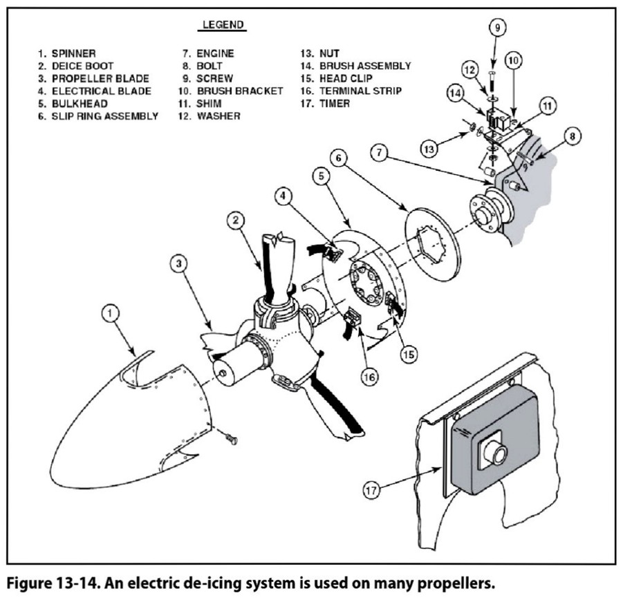
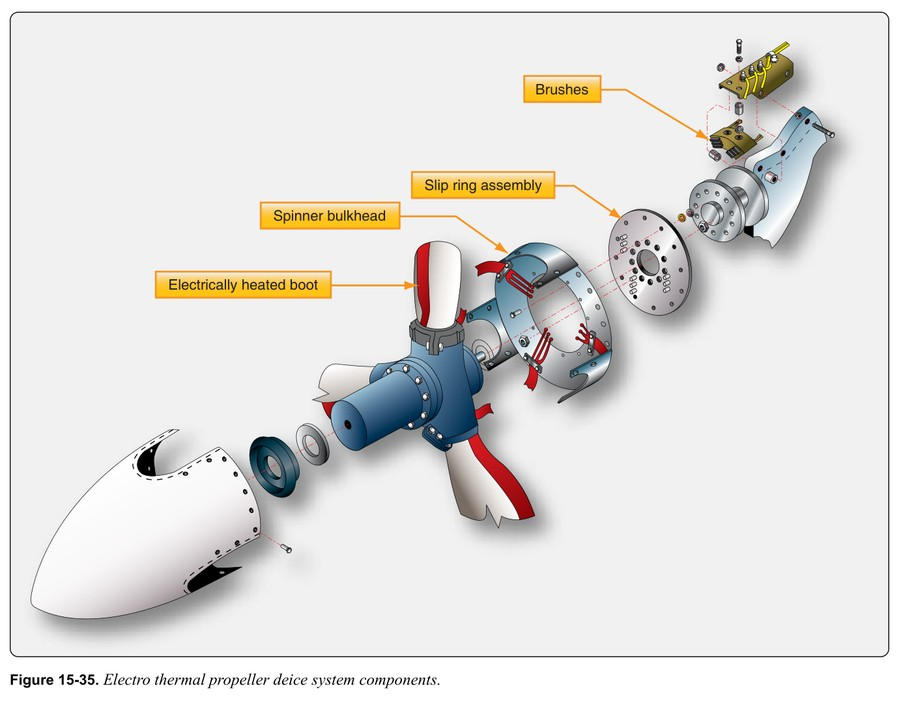
지상 제빙·방빙은 이륙 전 항공기를 얼음·서리·눈 오염으로부터 자유롭게 합니다. 트럭 장착 이동식 제빙기(탱크·히터·붐·분사기)가 일반적입니다.Ground de/anti-icing frees the aircraft of ice/frost/snow before takeoff; a truck-mounted mobile unit (tanks, heater, boom, sprayer) is typical.
1) 어는점강하제(FPD) — Type I(비증점, 저점도, 온도에만 의존), Type II·IV(증점, 고점도, 긴 홀드오버).1) Freezing-point depressants (FPD) — Type I (unthickened, low viscosity, temperature-only), Type II/IV (thickened, high viscosity, longer holdover).
2) 홀드오버 타임(Holdover Time) — 표면이 얼음·서리·눈으로부터 보호되는 시간. Type I은 짧고, Type II/IV는 김. ISO·SAE·AEA가 온도·혼합비·기상별로 발표하나 지침일 뿐. 습설·강한 강수·낮은 외피온도는 홀드오버를 단축.2) Holdover time — how long the surface is protected; short for Type I, long for Type II/IV; ISO/SAE/AEA publish it by temperature/mix/weather but only as guidelines; wet snow, heavy precipitation, and low skin temperature shorten it.
3) 1단계 vs 2단계 — 1단계: Type I을 물과 희석(50/50~70/30), 약 140°F로 가열 분사(제빙+얇은 프로필렌글리콜막). 2단계: 제빙 후 미희석 Type IV(더 진함)를 3~5분 내 냉간 분사(방빙). 이륙 시 전단력으로 떨어져 나감.3) One-step vs two-step — one-step: Type I diluted with water (50/50-70/30), heated ~140 F (de-ice + thin propylene glycol film); two-step: after de-ice, undiluted Type IV (thicker) applied cold within 3-5 min (anti-ice); shears off at takeoff.
4) 주의 — 피토·TAT·정압구에 직접 분사 금지, 찬 유리에 가열액 직접 분사 금지, 엔진·APU 흡입구에 직접 분사 금지, 날카로운 도구로 얼음 긁기 금지, 제빙은 출발 시간에 최대한 가깝게. 서리는 T-브룸으로 쓸거나 야간 커버로 예방.4) Cautions — don't spray directly at pitot/TAT/static ports, hot fluid on cold glass, or into engine/APU inlets; don't chip ice with sharp tools; de-ice as close to departure as possible; brush frost with a T-broom or prevent with overnight covers.
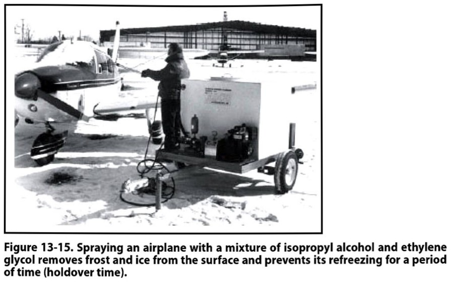
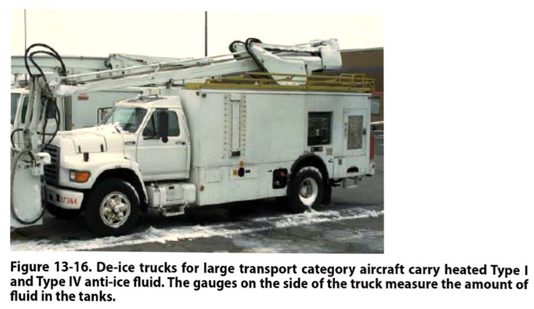
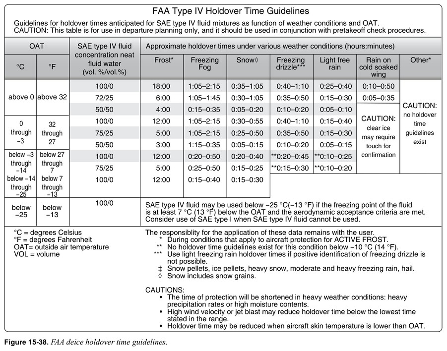
강수 중 시야를 확보하는 방법은 네 가지입니다: 와이퍼, 화학 레인 리펠런트, 공압(블리드 에어) 제거, 소수성 코팅.There are four ways to maintain visibility in precipitation: wipers, chemical rain repellent, pneumatic (bleed air) removal, and hydrophobic coatings.
1) 윈드실드 와이퍼 — 전기식 또는 유압식. 기장·부기장 측이 독립 계통(한쪽 고장 시에도 시야 확보). 블레이드가 규정 압력으로 유리에 밀착해야 하며, 파크(Park) 위치로 복귀. 마른 유리에 작동 금지 — 유리에 긁힘, 블레이드 손상.1) Windshield wipers — electric or hydraulic; the captain's and first officer's sides are independent systems (visibility retained if one fails); blades must press on the glass at the specified pressure and return to the park position; never operate on dry glass — it scratches the windshield and damages the blades.
2) 화학 레인 리펠런트 — 폭우 시에만 분사. 빗물과 결합해 매끄러운 막을 형성, 물이 구슬져 날아감. 마른 윈드실드에 분사 금지 — 번져서 오히려 시야를 방해하고 제거가 어렵습니다. 가압 캐니스터에서 노즐로 공급.2) Chemical rain repellent — sprayed only in heavy rain; it combines with rain to form a slick film so water beads and blows away; never apply to a dry windshield — it smears, obstructs vision, and is hard to remove; supplied from a pressurized canister to nozzles.
3) 소수성 코팅(Hydrophobic Coating) — 최신 윈드실드의 표면 처리. 물방울이 구슬져 굴러떨어져 와이퍼·리펠런트 의존을 줄입니다. 유지관리가 거의 불필요.3) Hydrophobic coating — a surface treatment on modern windshields; water beads and rolls off, reducing dependence on wipers/repellent with almost no maintenance.
4) 공압 제거(Pneumatic Rain Removal) — 엔진 블리드 에어를 윈드실드 하단 노즐로 분사해 고속 공기막(Air Blast)이 빗방울을 날려버림. 와이퍼가 없는 일부 고속기에 사용.4) Pneumatic rain removal — engine bleed air is blasted from nozzles at the windshield base, and the high-speed air sheet blows raindrops away; used on some high-speed aircraft without wipers.
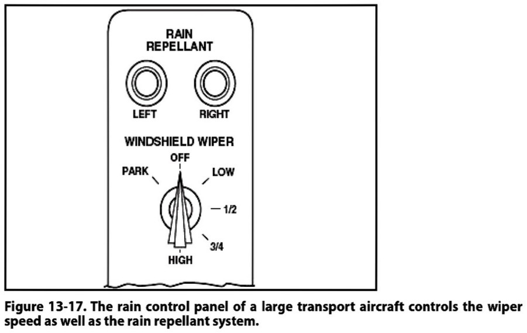
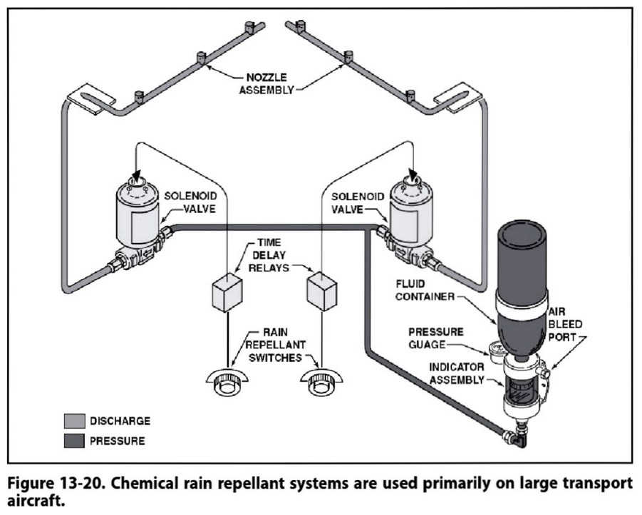
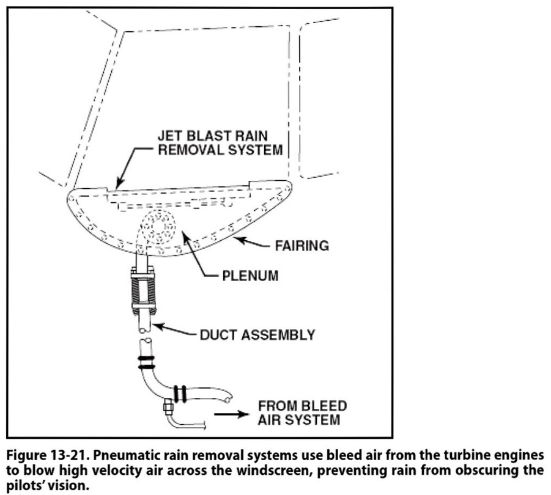
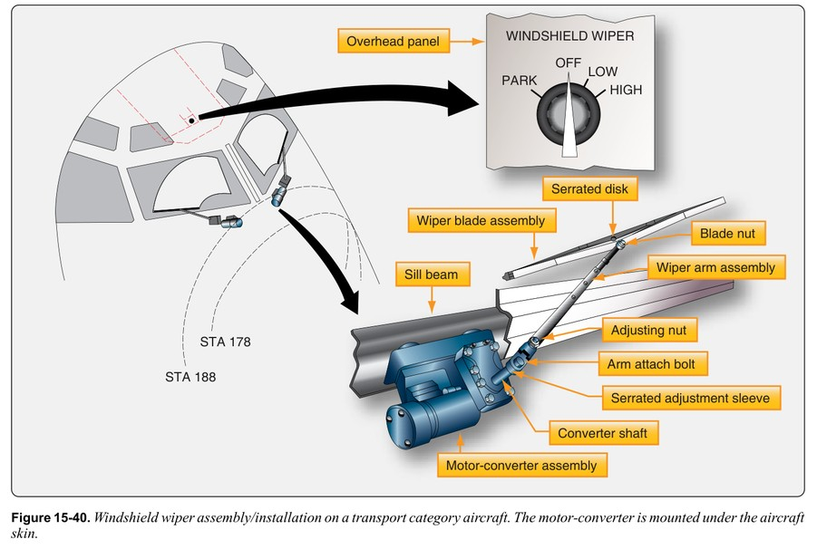
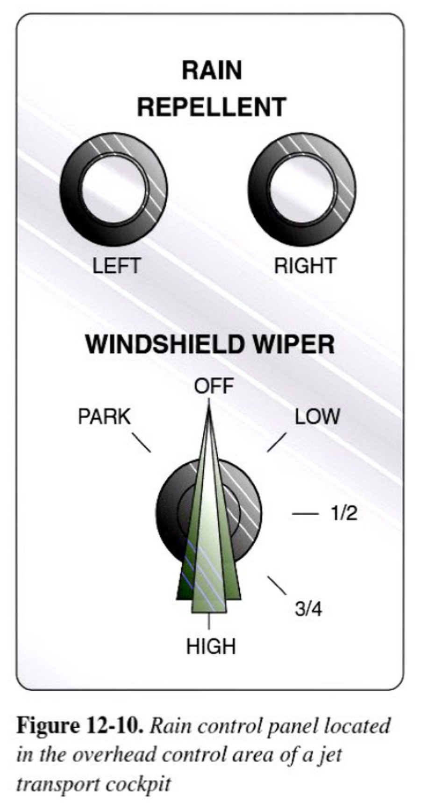
피토·정압계통 — 결빙 가능성이 있는 항공기의 피토관에는 전기 히터가 내장됩니다. 이 히터는 냉각 공기가 없으면 과열로 손상되므로, 지상에서는 짧은 점검 외에 켜지 말아야 합니다. 비행 중 전류계(ammeter)로 작동을 확인합니다(히터가 큰 전류를 소모).The pitot head has a built-in electric heater. It can overheat without cooling airflow, so it must not be run on the ground except for a brief check. Verify operation in flight by watching the ammeter.
정압구(static port)는 대개 서로 멀리 떨어진 2곳에 있어 동시 결빙 가능성이 낮고, 만약 둘 다 막히면 대체 정압원(alternate static source) 밸브로 기내 공기를 선택합니다.Two widely separated static ports make simultaneous icing unlikely; an alternate static source valve picks up cabin air if both plug.
가열 윈드실드(제트기) — 3층의 강화유리(tempered glass) + 열가소성 비닐층 + 바깥유리 안쪽면의 도전성 필름으로 구성. 400Hz AC를 오토트랜스포머로 승압해 필름에 전류를 흘려 가열. 서미스터(thermistor) 센서가 온도를 측정해 AC 컨트롤러가 전류를 조절. 4파운드 새 충돌(버드스트라이크)을 견디도록 설계되며, 열은 비닐층이 부서지기 쉬워지는 것을 방지합니다.A jet windshield has three tempered-glass layers + vinyl + a conductive film on the inner face of the outer glass. 400-Hz AC is stepped up to heat the film; thermistor sensors let the AC controller hold the correct temperature. It withstands a 4-lb bird strike, and the heat keeps the vinyl from becoming brittle.
유리 표면의 긁힘·칩이 도전성 필름을 끊으면 아크(arcing)가 발생해 국부 열점이 생기고, 열센서 근처에서 아크가 일어나면 온도 제어가 왜곡됩니다.Scratches or chips can break the film, causing arcing and local hot spots; arcing near a sensor distorts temperature control.
소형기(비즈니스제트·터보프롭) — 2층 강화유리 사이 비닐층에 가는 열선(fine-wire) 매립, DC 공급. NORMAL에서 약 110°F까지 가열 후 90°F로 식으면 재가열하는 사이클. 심한 결빙 시 HIGH로 특정 구역을 추가 가열. 이는 순수 방빙(anti-icing)이며, 지상 작동 금지(공기 흐름 필요).Small aircraft use a fine-wire element in vinyl between two glass layers, DC-powered: NORMAL heats to ~110°F, then reheats when cooled to 90°F. HIGH adds heat to a critical area. This is anti-icing only and must not run on the ground.
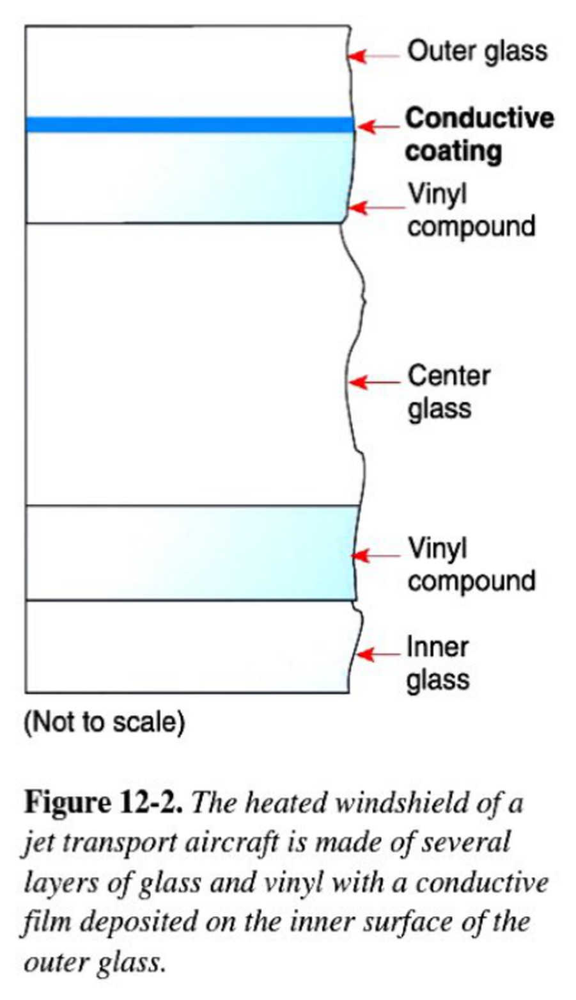
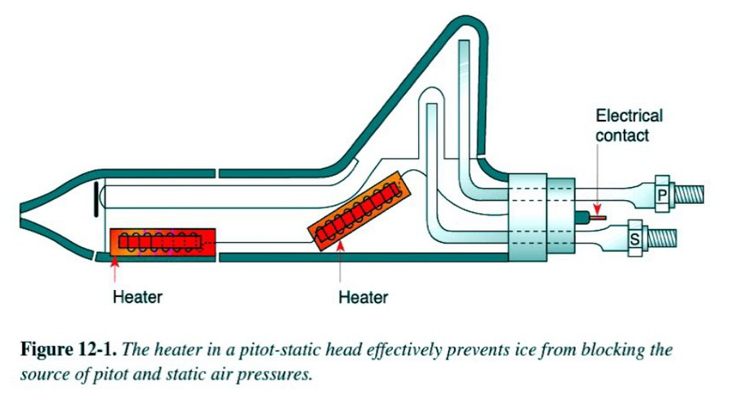
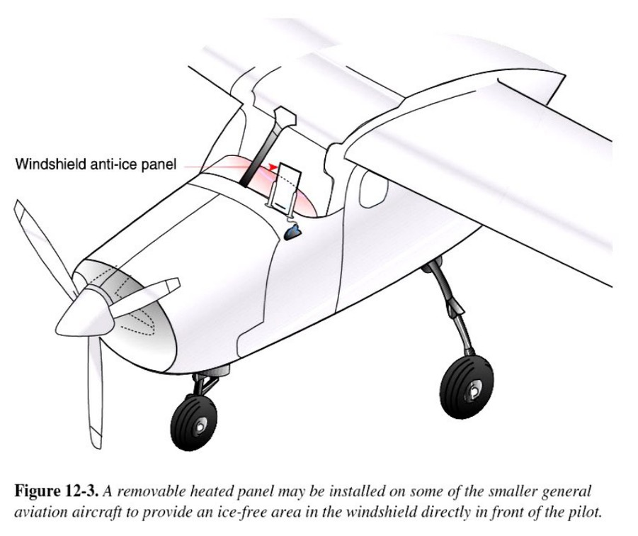
- A. 문제 없음No problem
- B. 유리 긁힘·블레이드 손상Scratched glass and damaged blades
- C. 더 깨끗해짐Cleaner glass
- D. 전기 절약Saves power
- A. ①②③⑤1, 2, 3, and 5
- B. ①②④⑤1, 2, 4, and 5
- C. ②③④⑤2, 3, 4, and 5
- A. 전류계(Ammeter)의 전류 지시 확인Ammeter reading (current draw) when the heater is on
- B. 튜브를 얼음물에 담가 확인Immerse the tube in ice water
- C. 저항이 0인지 확인Verify zero resistance
- A. 유리층에 적층된 열 센서(서미스터)Thermal sensors (thermistors) laminated into the windshield
- B. 조종사의 수동 전압 조절Manual voltage adjustment by the pilot
- C. 외기온도계The outside air temperature gauge
단발기 제빙 — 자이로 계기용 엔진 구동 공기펌프(vacuum pump)가 18~20psi 양압으로 부츠를 팽창시키고, 미작동 시 석션으로 부츠를 앞전에 밀착시킵니다. 습식(wet) 펌프는 배출측에 오일 분리기(oil separator)가 필요(윤활유를 배플로 회수해 크랭크케이스로 환수). 건식(dry) 펌프는 카본 베인이라 오일 분리기 불필요.Single-engine: the engine-driven vacuum pump gives 18–20 psi to inflate boots and suction to hold them deflated. Wet pumps need an oil separator on the discharge; dry (carbon-vane) pumps do not.
순간접점 스위치를 누르면 컨트롤 밸브→셔틀 밸브→타이머 순으로 작동. 타이머가 미익 부츠 약 6초, 익내측 6초, 익외측 6초 순으로 팽창시키고, 적정 압력이면 제빙 압력등이 켜집니다. 사이클 종료 시 오버보드 덤프로 배출하고 석션이 다시 부츠를 밀착.A momentary switch runs control valve → shuttle → timer; the timer inflates empennage ~6 s, inboard 6 s, outboard 6 s. A deice pressure light confirms pressure; then overboard dump vents and suction re-seats the boots.
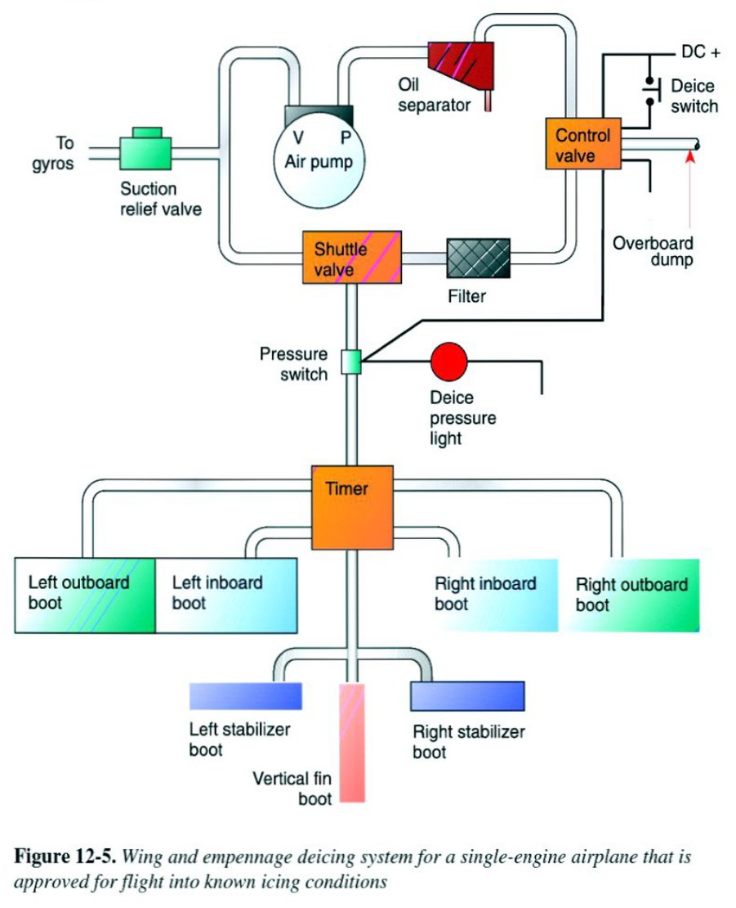
쌍발기 제빙 — 원리는 같으나 부츠가 크고 부품이 많음. 양 엔진 습식펌프 → 오일분리기·체크밸브 → 분배밸브/타이머(distributor valve/timer). 전기모터가 분배밸브를 시간 순서로 구동. 부츠는 좌우 대칭으로 작동해 공기흐름 교란을 양쪽 균등하게(비행·조종 문제 최소화).Multi-engine works the same with bigger boots and a distributor valve/timer driven by an electric motor. Boots actuate symmetrically to keep airflow disturbance even.
정상 작동 확인: 타이머가 부츠를 순차 구동하므로 압력 게이지는 변동(fluctuate)하고, 진공측은 사용 안 하므로 석션 게이지는 일정(steady)합니다. 미작동 시 분배밸브가 석션을 부츠로 연결해 밀착, 석션량은 석션 릴리프 밸브가 조절.In normal operation the pressure gage fluctuates as boots sequence, while the suction gage stays steady. A suction-relief valve regulates the holding suction.
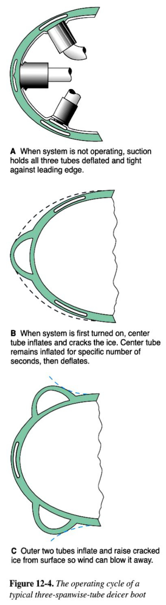
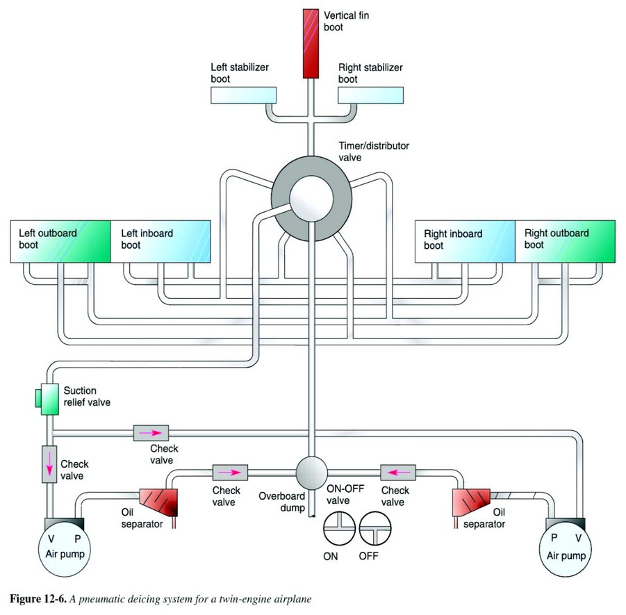
기화기 결빙(carburetor ice) — 가장 흔한 발동기 결빙. 연료 증발로 약 70°F 온도 강하가 생겨, 습도가 높으면 외기 100°F에서도 결빙 가능. 예방은 기화기 유입 전 공기 가열: FAR Part 23 기준 해면엔진(sea-level)은 90°F, 고공엔진(altitude)은 120°F 온도 상승 능력 필요. 가열공기는 필터를 우회하므로 지상 사용 자제.Carburetor ice is the most common: fuel evaporation drops temperature ~70°F, so ice can form even at 100°F OAT in high humidity. Heat the induction air: sea-level engines need a 90°F rise, altitude engines 120°F. Heated air bypasses the filter, so avoid ground use.
연료분사(fuel-injected) 엔진은 기화기 결빙이 없으나 흡입 필터 결빙 가능 → 대체 공기(alternate air) 밸브로 카울 내부 공기 사용. 일부 대형엔진은 이소프로필 알코올을 기화기 목에 분사해 결빙 방지.Fuel-injected engines instead can ice the intake filter and use an alternate air valve. Some large engines spray isopropyl alcohol into the carburetor throat.
터빈엔진 — 압축기 앞 결빙 방지를 위해 입구 케이스·가이드베인·노즈돔·노즈카울에 고온 블리드 에어 통로. 고속 지상 운전 시 45°F에서도 입구 압력강하로 결빙 가능. 지상 방치로 압축기가 얼면 온풍으로 녹인 후 회전.Turbine engines route hot bleed air through the inlet case, guide vanes, nose dome/cowl. Ground running can ice at 45°F from the inlet pressure drop; melt any ice with warm air before rotating.
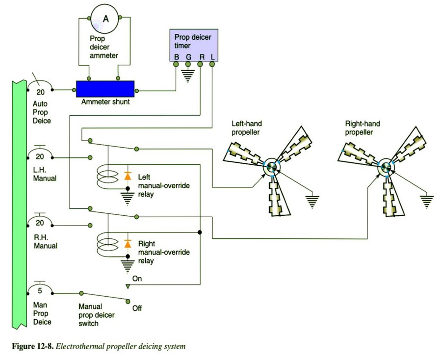
프로펠러 — ① 화학 방빙: 이소프로필 알코올+에틸렌글리콜을 슬링거 링(slinger ring)으로 허브에 공급→원심력으로 블레이드 앞전 분산, 피드슈로 집중. ② 전기열식 제빙: 블레이드 앞전 고무부츠에 열선 매립, 브러시·슬립링으로 전류 공급. 타이머가 우측 프로펠러 약 90초→좌측 90초 순환. AUTOMATIC 모드에서 전류계로 작동 확인.Propellers use chemical anti-ice (isopropyl + ethylene glycol via a slinger ring) or electrothermal deice (heated boots fed through brushes and slip rings, ~90 s per prop). Watch the ammeter in AUTOMATIC mode.
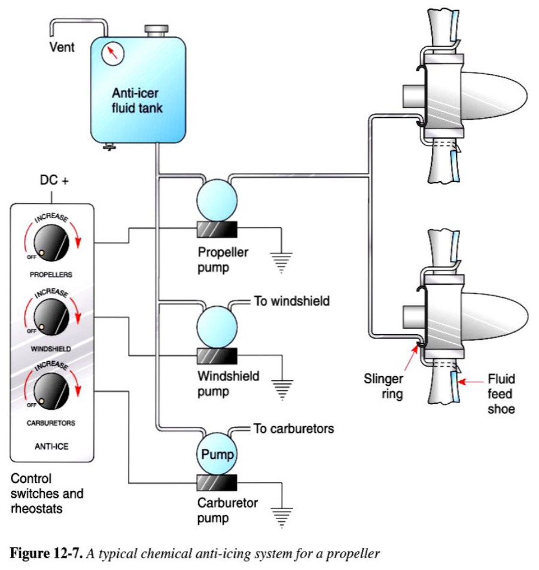
윈드실드 와이퍼 계통 📙 Jeppesen 참고
Windshield Wiper Systems소형기는 대개 강우 제거장치가 없습니다 — 풍방이 부드러운 아크릴이라 긁히기 쉬워 와이퍼를 안 달고, 프로펠러 후류·상대풍이 빗방울을 날려버립니다. 아크릴이 긁혀 물이 퍼지면 왁스로 다시 비딩(구슬 맺힘)시킵니다. 크고 빠른 항공기는 기계식 와이퍼·화학 발수제·공압 제거 같은 정교한 계통을 씁니다.Small aircraft usually have no rain-removal gear — the soft acrylic windscreen scratches easily, so no wipers, and the propeller slipstream or relative wind blows droplets off. If a scratched screen lets water spread, waxing restores beading. Large, fast aircraft use elaborate systems: mechanical wipers, chemical repellent, and pneumatic removal.
전기 와이퍼는 DC모터가 컨버터를 돌려 회전운동을 왕복운동으로 바꿉니다. 스위치를 OFF해도 모터는 블레이드가 PARK 위치에 갈 때까지 돌다가 멈춥니다. 유압 와이퍼는 주 유압계통 압력으로 제어유닛이 흐름 방향을 주기적으로 바꿔 랙&피니언 피스톤을 왕복시키며, 가변 오리피스로 속도를 조절합니다. 어느 방식이든 마른 풍방에서 절대 작동하지 말고(긁힘), 정비 시엔 깨끗한 물을 충분히 적신 상태로만 움직입니다.Electric wipers use a DC motor driving a converter that turns rotation into the reciprocating motion of the blades. Switched OFF, the motor keeps running until the blades reach PARK, then stops. Hydraulic wipers use main-system pressure; a control unit periodically reverses flow to stroke rack-and-pinion pistons, with a variable orifice for speed. Either way, never run wipers on a dry windshield (scratching); during maintenance, keep it flooded with clean water while the blades move.
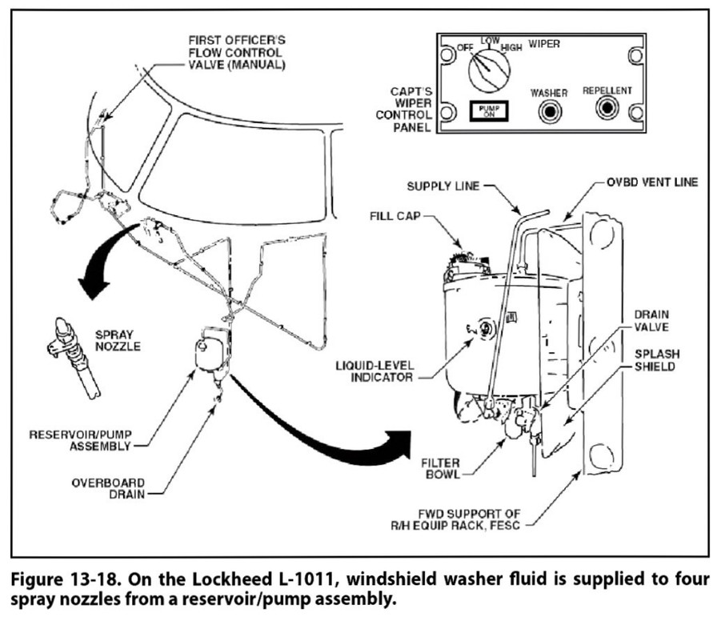
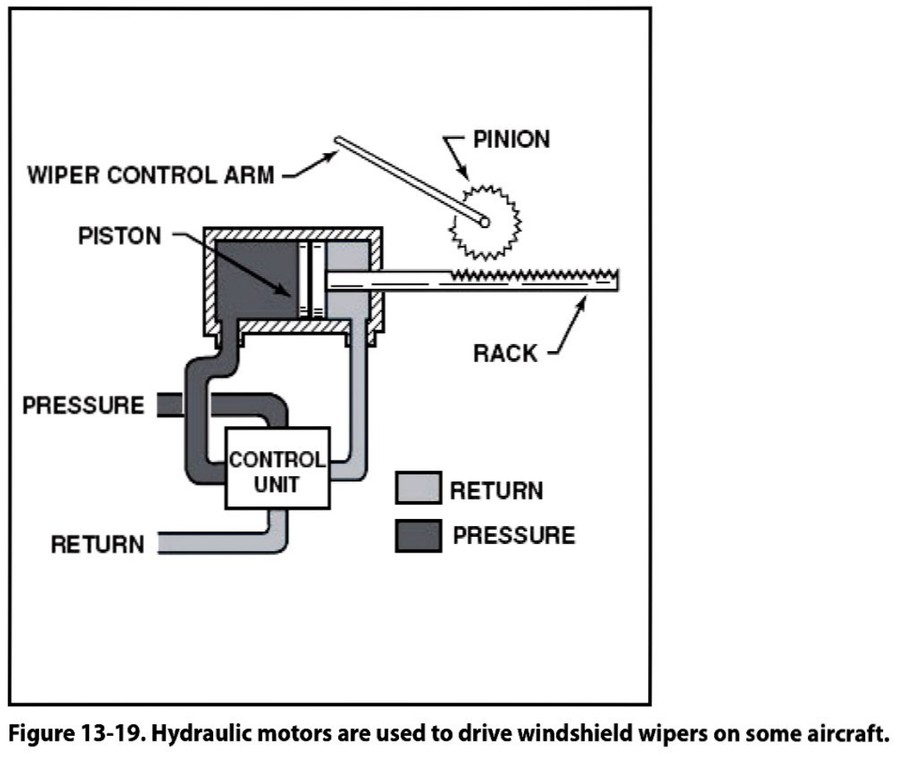
화학 발수제와 공압 제거 📙 Jeppesen 참고
Chemical Repellent & Pneumatic Removal많은 제트 수송기는 화학 발수제(예: RainBoe)를 풍방에 분사해 물이 유리에 닿기 전에 구슬로 맺혀 바람에 날리게 합니다. 발수제는 가압 캔에 든 시럽상 액체로, 와이퍼로 감당 못 할 폭우 시 버튼을 누르면 정해진 양이 한 번 분사되고 와이퍼가 고르게 폅니다. 반드시 충분한 강우에서만 써야 하며, 마른 풍방·약한 비에 뿌리면 얼룩져 시야를 흐리고 제거가 어렵습니다.Many jet transports spray a chemical repellent (e.g., RainBoe) on the windshield so water beads and blows away before reaching the glass. It's a syrupy liquid in pressurized cans; in rain too heavy for the wipers, pressing the button gives one timed application that the wipers spread evenly. Use it only in sufficient rain — sprayed on a dry screen or light rain it smears, obscures vision, and is hard to remove.
공압 제거계통은 엔진 블리드에어를 플레넘 챔버로 보낸 뒤 풍방 바깥면에 고속의 얇은 공기 시트로 뿜어 빗물이 표면에 닿지 못하게 막습니다. 이 방식은 움직이는 부품이 없어 고속 수송기에서 신뢰성이 높습니다.Pneumatic removal ducts engine bleed air into a plenum chamber, then blasts it across the outside of the windshield as a high-velocity sheet of air that keeps rain off the surface. With no moving parts, it is reliable on high-speed transports.
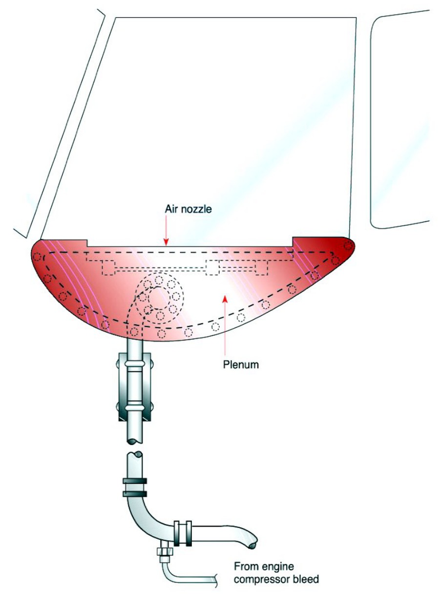
🗣 ASA 구술시험 (Oral Exam) Typical Oral Questions
📝 ACS 객관식 퀴즈 ACS Multiple-Choice Quiz
FAA 핸드북 전체 도면
FAA Handbook FiguresNo FAA Handbook figures for this chapter, or not yet uploaded.